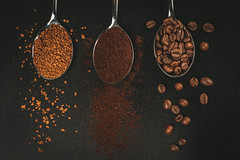

Get To Know Your Coffee!
There are four main types of coffee beans that are used. They are Arabica, Robusta, Liberica, and Excelsa. At Kenna's Coffee we use Arabica coffee beans for all of our coffee products. To learn more about Arabica Coffee beans and other types of coffee beans, visit The District Roasters by clicking on the picture below!
